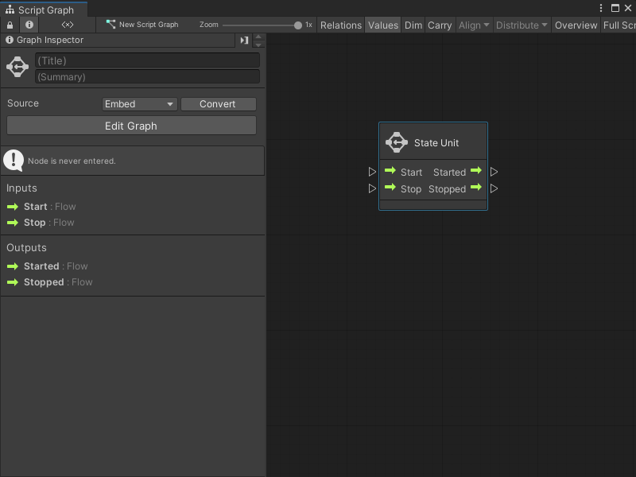

State Unit node¶
Use a State Unit node like a Subgraph. The node references and triggers a State Graph inside a Script Graph.

A State Unit node:
Can’t send or receive any data from ports.
Can only trigger its associated State Graph or other nodes inside its parent Script Graph.
Can’t change its number or type of ports.
For more information on Subgraphs and State Units, see Subgraphs and State Units. For more information on State Graphs and Script Graphs, see Graphs.
Fuzzy finder category¶
The State Unit node is in the Nesting category in the fuzzy finder.
You can go to the Graphs category and select any State Graph to create a State Unit node. For more information on how to create a State Unit node, see Add a State Unit to a Script Graph.
Inputs¶
The State Unit [!includenodes-inputs]
Name |
Type |
Description |
|---|---|---|
Start |
Input Trigger |
The first execution Input Trigger for the node. The connection made to this port indicates when Visual Scripting runs the nested State Graph. Visual Scripting makes all states marked as Start States in the State Graph active. |
Stop |
Input Trigger |
The second execution Input Trigger for the node. The connection made to this port indicates when Visual Scripting stops the nested State Graph. Visual Scripting makes all states and transitions in the State Graph inactive. |
Outputs¶
The State Unit [!includenodes-outputs]
Name |
Type |
Description |
|---|---|---|
Started |
Output Trigger |
The first execution Output Trigger for the node. The connection made to this port indicates what Visual Scripting runs after the nested State Graph starts. |
Stopped |
Output Trigger |
The second execution Output Trigger for the node. The connection made to this port indicates what Visual Scripting runs after the nested State Graph stops. |
Example graph usage¶
[!TIP] A State Unit node can use a new blank State Graph or an existing State Graph from a project. For more information, see Add a State Unit to a Script Graph.
In the following example, a State Unit node triggers when the Script Graph’s GameObject enters a specific Collider marked as a trigger. After the State Unit node starts, the Script Graph uses a Debug Log node to log Started new state! to the console. When the GameObject leaves the Collider, the State Unit node stops, and the Script Graph uses another Debug Log node to log Exited state to the console.
![An image of the Graph window. The Output Trigger port from an On Trigger Enter Event node connects to the Start port on the New State Graph State Unit node. The Output Trigger port from an On Trigger Exit Event node connects to the Stop port on the New State Graph State Unit node. The Started Output Trigger port on the State unit node connects to the Input Trigger port on a Debug Log node. A String Literal node with a message of "Started new state!" connects to the Message input port on the Debug Log node. The Stopped Output Trigger port on the State Unit node connects to the Input Trigger port on another Debug Log node. Another String Literal node with a message of "Exited state" connects to the Message port on the second Debug Log node.](../../../../../../_images/vs-state-unit-node-script-graph-example.png)